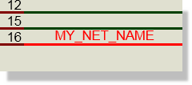
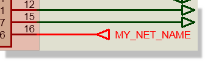

So what exactly is a netlist? A netlist is a list of nets and a net is a group of pins that are connected together. On the schematic, a pin is defined by the reference of the component to which it belongs, its type (determined when the relevant device was created) and the pin name or number.
A net can also be named and one of the jobs of the netlist compiler is to merge all nets that have been given the same name. Connections between groups of pins can thus be indicated without having to draw wires between them. This facility is useful for avoiding clutter within a sheet and essential for specifying connections between sheets in a multi-sheet design. The following cause a name to be associated with a net:


If several of the above occur with different names, the net takes on all the names and will be merged with any other nets which have any of the names. The final netlist will choose one name for the net and a precedence scheme based on the types of the various name-donors is used to choose it - specifically in order of decreasing priority the ranking is:
As a special case, unnamed Power Terminals assume the name VCC and unnamed Ground Terminals assume the name GND.
Net names can contain any alphanumeric characters plus the minus sign ('-') and the underscore ('_'). Spaces can be used in the Proteus environment but may cause problems for other software. The exclamation mark ('!') and asterisk ('*') characters have special meanings which are documented later in this section. Net name comparison is case insensitive.